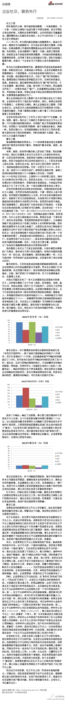
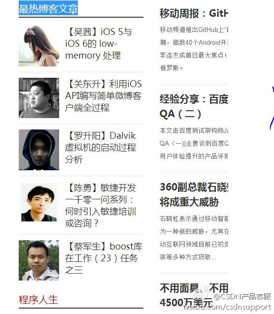

虽然是讲电商的运营，但对其它#社区运营#人员一样适用。社区运营人员所掌握的流量，推广位，会员信息等资源，并不是无价和免费的东西。@派代:#派干货#【做京东运营两年的感悟】做京东运营以来,经常会碰到抱怨的商家,原因不外乎是没销量,没活动等等.最常用来安慰他们的一句话是"在这个圈子,就要遵循这个圈子的规则."为什么同样的产品与价位,其他品牌就可以享有更多的资源?除了运气,更重要的是遵循了圈子内的规则.网页链接
这个问题好：“为什么不从服务开始呢？”//@叶开: 企业社交，服务先行！@汉拓科技:企业社交，服务先行：社交之惑 四年前的开心网、两年前的新浪微博、一年前的微信，当一个接一个的社交网络产品成为整个中国互联网、甚至中国社会热点的时候，无数的企业摩拳擦掌，众多的营销公... 网页链接 （使用新浪长微博工具发布 网页链接） 
如果按效果/成本算的话，我觉得选用内容传播工具的顺序会是：1。短信；2。邮件；3。微博；4。博客；5。论坛 ...... 理由是看这些工具中的垃圾信息比例。@风雷麦子:内容传播据说有12种工具：1.新闻报道，2.微博，3.minisite网站，4.图片，5.电子邮件，6.社区/论坛，7.视频，8.SNS网站，9.百科/问答，10.微信，11.短信，12.博客。问题：还有哪些工具？哪三种工具可以排前三？
#社区运营# 做年度城市巡讲计划的时候，参考下这个文章。@创业家传媒:#创业必备#中国新兴城市50强， 这是一个规模达到2.9万亿美元的经济体，相当于德国目前的水平。若将这50城视为单一实体，它将是全球第五大经济体。 预计到2020年，规模有望达6.7万亿美元，超日本目前的经济规模。当你老板兴致勃勃的要扩展的时候，记得提醒他别乱找城市哦。网页链接
#社区运营# CRM的最终效果，还是落到了圈子上。@老高电商圈子:#淘宝干货#【CRM客户关系管理全流程】如今，电商盈利压力越来越大，价格战等粗狂性运营方式越来越不受欢迎，而CRM因为如下特点得到越来越多企业的关注。争取一个新客户的成本是保留一个老客户成本的5倍；企业客户流失率降低5%，其利润就能增加25%-85%；60%的新客户来自老客户的推荐（查看大图）
#社区运营# “上述种种作法都来源于酒店的创始人凯撒.里兹的个人信条，相信通过最为专业周到的服务去赢得尊重的成就，而正是这种理念和价值观造就了丽思酒店今日的传奇”@刘思聪:【长微博：丽思·卡尔顿传奇服务背后的秘密】并非所有的客户都是上帝，只有那些忠诚客户才是真正的财富，顾客保持忠诚的时间越长，为公司带来的利润就越多，因为他们创造稳定的收入流，营销费用也会减少，这样一群人在丽思·卡尔顿酒店被称作“终生客人”...做生意就是卖服务，推荐抽空一看...
#社区运营#之前有人想请小米的运营团队分享下经验。现在有文章可学习下。@中国电商俱乐部:【小米@黎万强 ：80万微信米粉是如何炼成的】“小米手机”微信公众号在3个多月前才注册，真正发力运营是从今年4月开始，但却迅速累积了80万粉丝。小米副总裁黎万强首度向《IT经理世界》@中国电商俱乐部 及@中国CMO俱乐部 揭秘小米手机的另一个神奇故事。网页链接
#开发者大时代# 软件吞噬的行业有很多。@崔启亮-北京ISTQB:上世纪90年代计算机的普及，使一批不会计算机的老翻译失去了饭碗。十年前计算机辅助翻译软件CAT的出现，使一些不懂CAT的中年译者下岗了。现在云翻译和机器翻译来临，会有多少英语专业不掌握这些新技术的年轻翻译人员被淘汰呢。做职业翻译只懂语言，不懂翻译技术是走不远的。
以前我姐姐有宝宝时，请了个家乡的远亲来帮忙照顾，作为回报，要给小姑娘在城市里安排个工作。姐姐帮忙找了个某事业单位招待所的工作。小姑娘回家哭诉，说她不愿意干这种“伺候人”的工作，后来帮着找了工资更低的商场营业员工作，算满意了。
记得上次社区领导人聚会中，@LukeFan 说服务者的态度应该是：“爷看着高兴，就赏几个钱吧”，我感觉这态度很是卑躬屈膝，当场还驳斥了几句。服务不是乞讨，服务者提供了有价值的东西，享受者理应付钱，哪里有“赏”的道理，那是自己“挣”的。
所以国内的服务总是差强人意。据说海底捞创始人谈秘诀，就是把服务员当“人”看。//@王忠杰rainy:这方面国内外的对比很明显，国外的服务员大都充满着极度的自豪感和自信心，他们为给客人提供了精致的服务而感到享受。@Ada李力:我不知道服务业等同于“伺候人”的这种意识来自哪里。另外，“伺候人”就是低人一等吗？做员工的，要伺候老板；当老板的，要伺候顾客；不需要“伺候人”的工作很少，程序员算是特例，因为主要是跟机器打交道。
日本禁止小费，服务也很好。所以不是是否给小费的问题。//@LukeFan: 国外，大家享受服务，有给小费的习惯。在这种社会氛围下，给小费的人，怀着感激，接受小费的人，也是心安理得。在美国，即使不给小费，服务者也不会心存怨恨。在国内，如果希望依靠服务收取费用，那么首先要做好服务，将服务产品化。@Ada李力:记得上次社区领导人聚会中，@LukeFan 说服务者的态度应该是：“爷看着高兴，就赏几个钱吧”，我感觉这态度很是卑躬屈膝，当场还驳斥了几句。服务不是乞讨，服务者提供了有价值的东西，享受者理应付钱，哪里有“赏”的道理，那是自己“挣”的。
有理//@王忠杰rainy:这分为主观和客观两方面。主观上，服务人员要把自己看作与客人对等的位置，但中国几千年的等级观念过于强烈，他们感受不到服务他人的乐趣；客观上，不得不说，中国的“客人”的素质亟待改善，对服务人员大呼小叫的场景屡见不鲜...@Ada李力:我不知道服务业等同于“伺候人”的这种意识来自哪里。另外，“伺候人”就是低人一等吗？做员工的，要伺候老板；当老板的，要伺候顾客；不需要“伺候人”的工作很少，程序员算是特例，因为主要是跟机器打交道。
博弈时刻在变//@LukeFan: 只是以一种特殊的氛围为例，服务的产品化、商品化、货币化本身是有一个过程的。在这个过程中，如果丧失了谦卑的服务心态，那么就会变得高高在上，就会变成向那些应该为人民服务的公仆那样。所谓的赏赐之说，只是要时刻提醒自己，我们在为他人服务，我们为什么要做这种服务。@Ada李力:记得上次社区领导人聚会中，@LukeFan 说服务者的态度应该是：“爷看着高兴，就赏几个钱吧”，我感觉这态度很是卑躬屈膝，当场还驳斥了几句。服务不是乞讨，服务者提供了有价值的东西，享受者理应付钱，哪里有“赏”的道理，那是自己“挣”的。
回复@LukeFan:博弈，是在考虑到人性弱点的基础上，建立的规则，这是个动态的平衡。期望交易双方都是诚心实意的人，太理想化了。 //@Ada李力:博弈时刻在变@Ada李力:记得上次社区领导人聚会中，@LukeFan 说服务者的态度应该是：“爷看着高兴，就赏几个钱吧”，我感觉这态度很是卑躬屈膝，当场还驳斥了几句。服务不是乞讨，服务者提供了有价值的东西，享受者理应付钱，哪里有“赏”的道理，那是自己“挣”的。
//@王忠杰rainy:服务中有个重要的词叫做“移情”(empathy)，说的是提供者站在顾客角度真心实意为顾客考虑，提供个性化服务。但反过来的移情也需要重视：顾客要站在提供者的角度考虑问题。移情代表的是“合作”，博弈则有了“对抗”的味道。@Ada李力:记得上次社区领导人聚会中，@LukeFan 说服务者的态度应该是：“爷看着高兴，就赏几个钱吧”，我感觉这态度很是卑躬屈膝，当场还驳斥了几句。服务不是乞讨，服务者提供了有价值的东西，享受者理应付钱，哪里有“赏”的道理，那是自己“挣”的。
//@LukeFan: 我不觉得这个事情，抱着博弈和寻求平衡的方式，可以做好。这就是为什么那么多人抄海底捞，但是抄不像的原因。聪明的中国人，很难找到这种平衡，大家都那么聪明。能做的，只是真心实意的服务，用真诚的付出，期待真诚的回报。@Ada李力:记得上次社区领导人聚会中，@LukeFan 说服务者的态度应该是：“爷看着高兴，就赏几个钱吧”，我感觉这态度很是卑躬屈膝，当场还驳斥了几句。服务不是乞讨，服务者提供了有价值的东西，享受者理应付钱，哪里有“赏”的道理，那是自己“挣”的。
//@ACOUG中国:不是“伺候”，是“服务”。社会中，每个人都是依靠为他人服务获得自身价值，IT从业者为客户服务，服务员为客人服务，歌手为听众服务，公务员为人民服务。秉承感恩的心，做好本职工作，服务好服务对象，就能获得对应的价值。@Ada李力:我不知道服务业等同于“伺候人”的这种意识来自哪里。另外，“伺候人”就是低人一等吗？做员工的，要伺候老板；当老板的，要伺候顾客；不需要“伺候人”的工作很少，程序员算是特例，因为主要是跟机器打交道。
博客专家们，还有博客专栏主们，都用些好看的头像啊。@CSDN产品客服:#产品动态# CSDN首页的最热博客文章栏目，将主要推荐博客专家与博客专栏。旧版CSDN的博客精选栏目中文章，已加入到新首页中的中间滚动栏中。 
回复@KDS-黑暗浪子:这是认知问题了。让产品经理或项目经理来说说，他们和程序员打交道时，感觉到底谁在“伺候”谁？ //@KDS-黑暗浪子:程序员要伺候产品经理和BA～甚至有时候还的伺候项目经理@Ada李力:我不知道服务业等同于“伺候人”的这种意识来自哪里。另外，“伺候人”就是低人一等吗？做员工的，要伺候老板；当老板的，要伺候顾客；不需要“伺候人”的工作很少，程序员算是特例，因为主要是跟机器打交道。
回复@陈尚义:这么说，中国现在的成功人士，当年都是得当过孙子？ //@陈尚义:我的一位政界老大哥，我的老领导，临近退休了，他对我说，成功的人都善于做孙子，想做大爷的很难成功。哈哈...@Ada李力:我不知道服务业等同于“伺候人”的这种意识来自哪里。另外，“伺候人”就是低人一等吗？做员工的，要伺候老板；当老板的，要伺候顾客；不需要“伺候人”的工作很少，程序员算是特例，因为主要是跟机器打交道。
//@杨中科:“伺候人"其实说的是"服务意识"，任何职业都要服务好他的"客户"，这个"客户"可以是顾客可以是买家，可以是老板，也可以是自己的下属，有服务意识才能把工作做好。话说程序员也是需要伺候人，领导、系统用户、同事都是他的"客户"@Ada李力:我不知道服务业等同于“伺候人”的这种意识来自哪里。另外，“伺候人”就是低人一等吗？做员工的，要伺候老板；当老板的，要伺候顾客；不需要“伺候人”的工作很少，程序员算是特例，因为主要是跟机器打交道。
技术也存在同样问题，技术只有通过“产品”这种实体，才有价格。//@白硕SH:目前看，只能给信息的「句柄」定价。人名，地点，涉及的实体，都可以。其目的不是卖信息而是炒信息。 //@马少平THU:搜索引擎给“词”定了价，谁给信息定价呢？@思考和计算的大狗:如何给信息定价？信息如何货币化？请教@白硕SH 老师。
//@石鼓钟山:1）价格反映价值，但这个价值或许不能从劳动力消耗来定，或许看此信息能引发的获益，然后就是获益分配，合作博弈论或许是一个角度；2）信息的价格或许是相对于其他信息而言的，这意味着信息的价格需要通过竞价体现，非合作博弈是一个思路，当然后者也是多agent教学中的一个典型实例。@思考和计算的大狗:如何给信息定价？信息如何货币化？请教@白硕SH 老师。
你是说，要在完全市场化的环境中，才可能真诚付出获得真诚回报？//@大徐oracle:我认为问题的根源始于中国的政治体质结构，资源被权利垄断，导致投机取巧远胜于脚踏实地。＂真诚的付出期待真诚的回报＂这话放在中国很多情况下就变成＂在期待中饿死＂了@Ada李力:记得上次社区领导人聚会中，@LukeFan 说服务者的态度应该是：“爷看着高兴，就赏几个钱吧”，我感觉这态度很是卑躬屈膝，当场还驳斥了几句。服务不是乞讨，服务者提供了有价值的东西，享受者理应付钱，哪里有“赏”的道理，那是自己“挣”的。
 网页链接
网页链接